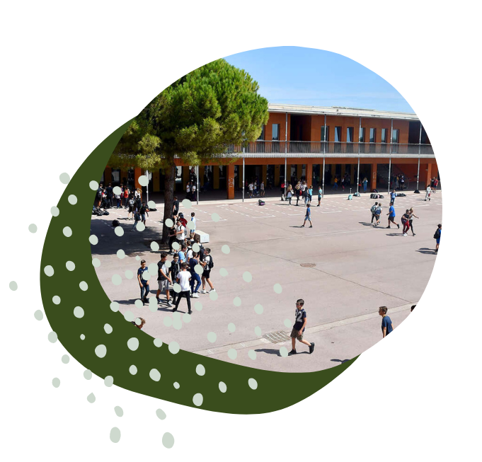

Découvrir et entreprendre auprès des plus jeunes
L’IMT d’Alès a choisi de créer ce concours afin de faire découvrir aux jeunes la programmation et la robotique.
Ce projet a pour but d’intégrer différents collèges et lycées. Cela permet d’acculturer les jeunes au domaine de l’informatique.
